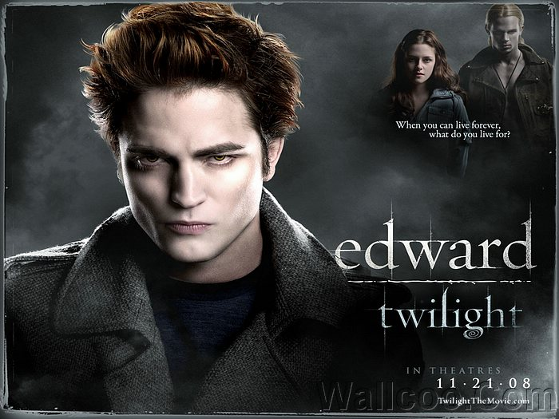

The story of Bella Swan and Edward Cullen is a ghostly story, combining vampire legends, werewolf stories, campus life, horror suspense, adventure comedy and more. Elements. Let the emotional adventures of people who know no borders make you infinitely close to the world's popular reading front; at this moment, people all over the world are reading the LOVE STORY; a mysterious neoclassical The Romance of Romance is a magical surrealistic love story that takes place on contemporary campuses; a fantasy love story that everyone can read, a profound choice that everyone can make between "intelligence and emotion"; from Adam, The Bible story of Eve stealing the forbidden fruit begins, and human beings are at a loss when they appear.
Bella exiled herself to Fox, a remote, year-round town. She couldn’t think of it, it was this choice that made her meet him at the crossroads of fate. The moment of eye contact, they have understood each other, waiting for them, in addition to the temptation of happiness, there is a dangerous abyss. The two people who are in love with each other, swinging between love and danger, spend each day with fresh and exciting, like the long-lost sunshine, scattered in the romantic twilight. Since he has a fascinating appearance, a superhuman body, and a human ability, what is he sacred? And she is just an ordinary girl who is born with poor motor nerves and pale skin like a sick person. They met at the age of seventeen when they met. The wheel of time is solid to him, but it is spinning at her speed. His youth will last forever, her youth will eventually decay, and there is really an intersection between the two of them. Beginning with Adam and Eve stealing the forbidden fruit, facing the whirlpool of love and hate, human beings are always at a loss. Happiness moves slowly, waiting for the opportunity to move. When a vulnerable girl is to be integrated into a very human world, the danger she faces is much more difficult than kissing a good devil. After the twilight of the day, the ups and downs of this adventure story has just begun. The author portrays the emotions of the protagonist's adolescence and the confusing emotional enthusiasm. The description and refined words of the protagonist evoke the reader's endless imagination, and the true and illusory stories and the twists and turns of the plot arouse the reader's continuous Read the impulse. In the warmth and lingering of the heart and soul, the readers witnessed the shackles of youth, the beauty of first love, and the struggle of reason and emotion, the struggle of soul and flesh...
Edward is deeply fascinated by Bella and also likes the unique fragrance of her body. Helpless happy time is always short. At her 18th birthday party, Bella accidentally cut her arm, and the blood of the rogue evokes the bloodthirsty nature of Edward's family. In order to protect his beloved, Edward and his family left the town of Fox. After Edward left, Bella's world collapsed completely. She began to try various adventures because she found that Edward's voice would appear in her mind as long as she did something dangerous. Bella's self-abuse madness did not change Edward's heart. At this time, the young and innocent Jacob appeared in her pale world. Although he knew that Bella had other people, he still accompanied and protected her. One is a rock-solid icy, one is a hot-hearted werewolf, how will Bella choose? Edward thinks that Bella has jumped into the sea and can't stand such a sudden blow. He decided to make everything a break. . The twilight gradually receded, waiting for them is a crescent moon that shows the darkest night, will Bella and Edward fall into this dark world? Can they recapture each other's precious counterparts before the end of their lives and save the most exciting love in the world?